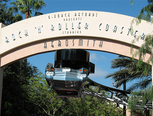

ROCK 'N' ROLLER COASTER
SPECS
Max Height: 80 ft.
Max Speed: 57 mph
Inversions: 3
Duration: 1 min. 22 sec.
Manufacturer: Vekoma
REIVEW
This pictures doesn’t do this ride any justice whatsoever, but the indoor pictures were mediocre. But you start out with a video staring Aerosmith, and you have to take a limo to meet them at a party. So you get in you ride, and then you start to hear Steven Tyler count down from 10. After 1, you launch into the darkness. You then will go through a loop, followed by many turns and I believe a corkscrew. There are parts of this ride I love and other parts I wasn’t impressed. I love the story behind it and the launch start. But I felt the ride after the loop lacks anything impressive. It felt like a lot of turns to me, without anything else. I guess that’s a good thing if your limousine isn’t flipped upside down. But in all seriousness, Disney got the theme down like usual, but I feel like the coaster missed the mark at times.